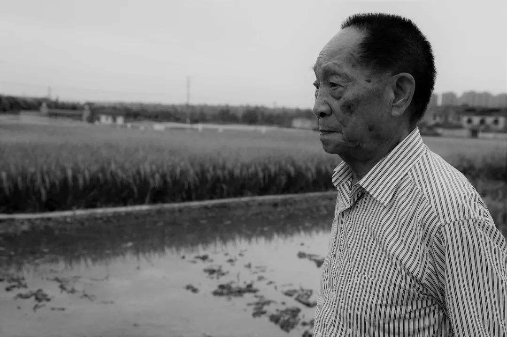

袁隆平
首届国家最高科学技术奖得主、杂交水稻之父

“一粒种子改变一个世界” “我不在家，就在试验田；不在试验田，就在去试验田的路上”
- 1953-毕业于西南农学院
- 1955-被选为中国工程院院士
- 1999-中国科学院北京天文台施密特CCD小行星项目组发现的一颗小行星被命名为袁隆平星
- 2000-获得国家最高科学技术奖
- 2004-获得沃尔夫农业奖
- 2006-当选美国国家科学院外籍院士
- 2010-获得澳门科技大学荣誉博士学位
- 2013-获得第四届中国消除贫困奖终身成就奖
- 2018-当选中国发明协会首届会士。中央、国务院授予袁隆平改革先锋称号，颁授改革先锋奖章，获评杂交水稻研究的开创者。
- 2019-国家主席习近平签署主席令，授予袁隆平“共和国勋章”
- 2020-当选2020中国经济新闻人物
人物经历
袁隆平是一位真正的耕耘者。当他还是一个乡村教师的时候，已经具有颠覆世界权威的胆识；当他名满天下的时候，却仍然只是专注于田畴。淡泊名利，一介农夫，播撒智慧，收获富足。他毕生的梦想，就是让所有人远离饥饿。
--中国科技评奖委员会评
沉重缅怀袁先生的逝去！如果可以，希望您在该网页了解更多（袁隆平-百度百科 ）